来源：https://uyna8i1s6g.feishu.cn/docx/MNYydAfOsoSaNxxFpF3cLuxZntc
大家好，我是 sky 陈天，正在努力成为一个 AI 转型顾问 、AI 培训师、提示词工程师。
我比较擅长从 0 - 1 跑通一件事情，这次我从 0 - 1 跑通了 AI 企业培训，完成了一个最小的 MVP 案例，我觉得除了指令工程师，其实也可以兼职做AI企业培训师，未来一定会有很多AI企业培训的机会，而且单价也不低，现在人才也比较稀缺，可以先做AI企业培训，然后再深入地接触到业务人员，也可以促进指令定制的机会。所以这次分享主要是为想要尝试 AI 企业培训的朋友，提供一个思路。
这次 AI 企业培训的直接收益虽然不是很大（两个礼品卡折合人民币 600 元），因为这位企业家后续会是我的合作伙伴，也是 隔壁社群的圈友，所以也不好意思收费，但对我来说战略意义大于经济意义。这意味着后续我是有能力接 AI 企业培训，以及有成功的案例了。 AI 企业培训肯定是可以赚钱的，通过这次培训，我至少已经在牌桌上了，后续就要慢慢开始收费了，而且培训也是一个很好的切入口，可以做企业 AI 解决方案，做一些产品的带货。
今天就来分享一下我是怎么做到 12 小时用 AI 从 0 - 1 开发一个企业培训课程 、企业培训后的一些复盘和心得，以及我是如何获得与抓住这次机会的。
成果可看企业培训的推文：https://mp.weixin.qq.com/s/Rz2YXY1FnoDTat4Ri0WSMw
上周我有幸受到一位无锡本地企业家的邀请，在昨天（ 7 月 29 日）去一家企业进行 AI 科普培训，这件事情是在上周日敲定的，也就是说我只有一周的时间准备这次课程。我本身是有课程开发经验的，知道一个课程的开发、打磨、备课是非常耗费时间的。之前在公司打磨一个企业培训 2 天的课程，我作为课程开发的负责人，大概是 5 人分工，每个人花了大概 3 个工作日的时间才搞定的（ 3 * 5 * 8 = 120 工时）。这次的任务对我来说是一个挑战，也是一个机会，因为平时工作比较忙，而且我每天的公众号还需要日更，我不确定能否高质量地完成分享内容的开发。
但我还是接了，一方面是我觉得可以借这次机会再次系统梳理自己的知识框架，另外这次搞完后，自己也算是有个 AI 领域的培训案例了。毕竟之前的企业培训更多的还是做一些数据分析工具的培训（PS：我的数据分析工具培训经验很丰富，至少 30+ 场企业培训，所以是有相关基础的），这对我未来的 AI 个人IP打造也是有很大的好处的。
因为这次是企业的内训，主题主要是降本增效，所以这次课程的名字我就定为了："AI & ChatGPT 10 倍提效课"，既然是 AI 降本增效的分享，那我也强迫自己这次课程开发一定要用 AI 工具来提效加速。我使用的是 ChatGPT 4.0 + Mindshow 工具来辅助制作课程和制作 PPT ，为什么选择 Mindshow ？因为 Mindshow 的可控性会高一些。
在一周的晚上时间里，我大概每天晚上下班后抽出 1 - 2 小时，制作了 120 页的 课程 PPT。总共是花费了 12 个小时左右，相比于之前 120 小时的课程研发时间，自己用 AI 做课程开发也刚好达成了课程的目标 10 倍提效哈哈。
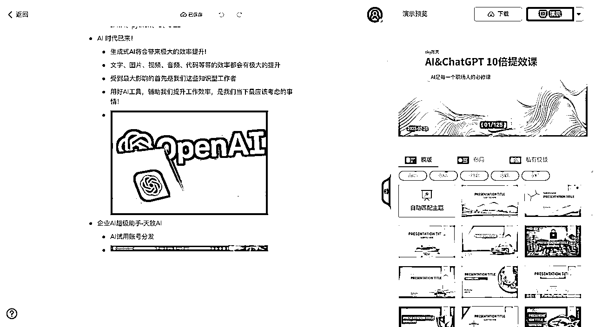
为了更好地展示我的 AI 提效工作流，我就直接分享一下我每天都花了多长时间，做了什么，怎么做的。
周一晚上我花了 1 小时，用 ChatGPT 生成了一个适合于 1 天线下培训的课程大纲，以及具体的时间安排，然后自己手动调整了一下，变成一个真正可用的课程大纲。Prompt 和具体的效果如下，真实的大纲就不便分享了。
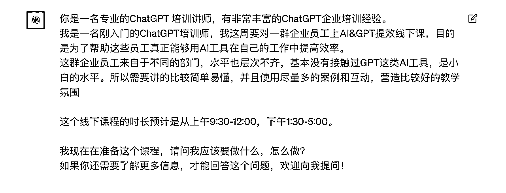
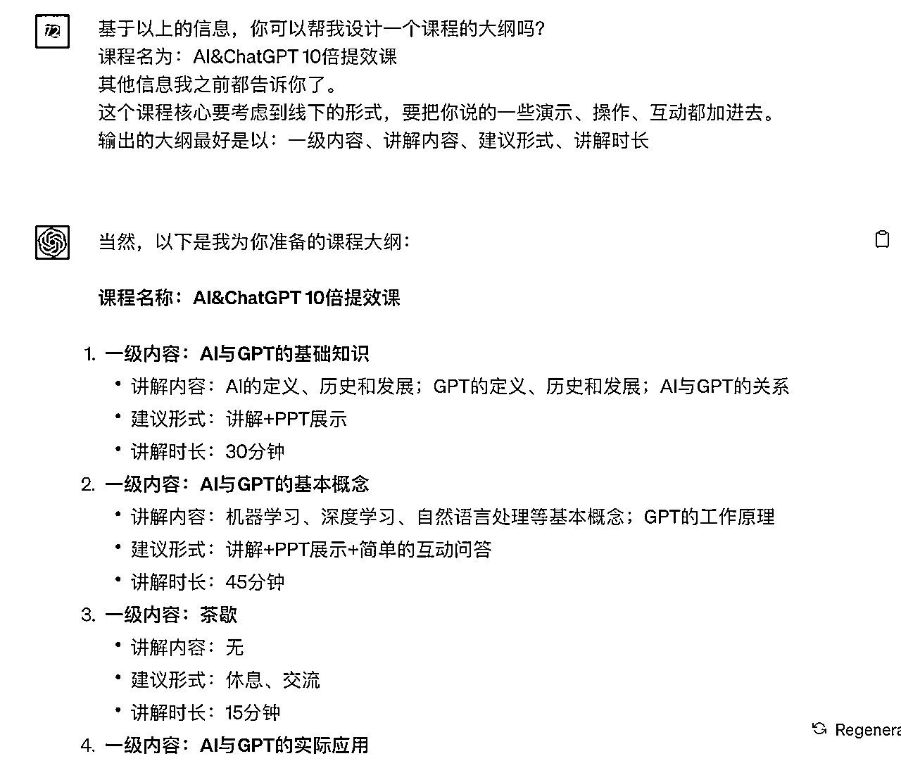
周二晚上，因为 mindshow 的逻辑是一个二级标题一页 PPT ，我大概花了 2 个小时，用幕布把每一页的 PPT 标题敲定，以及把一半的页面内容的架构给补充好，就是这页 PPT 讲几个点给定好。这一部分是最消耗时间的，因为这也是你授课的核心内容，也就是课程干货，需要平时的积累和系统地梳理。
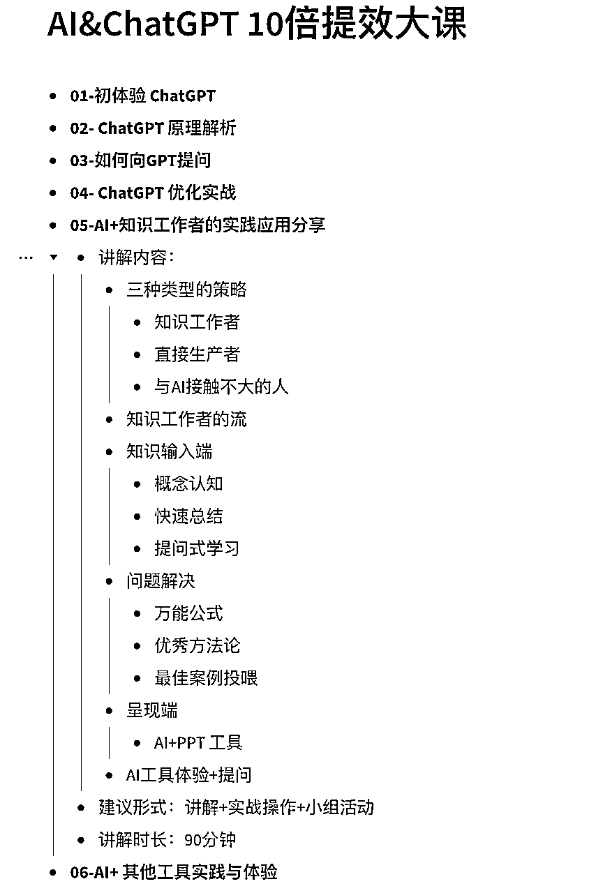
周三晚上，大概也是 2 个小时，把剩下的内容继续优化，补充完整，和第二天做的事的差不多，更细节的部分就会用到 ChatGPT 进行提效，因为培训本身是做知识分享，一些知识可以让 ChatGPT 给列好关键点，直接放到 PPT 中去。以下是具体的Prompt和例子：
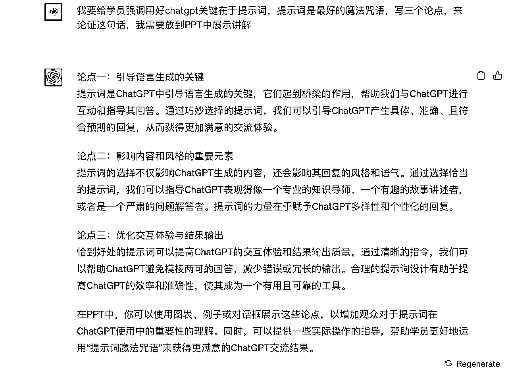
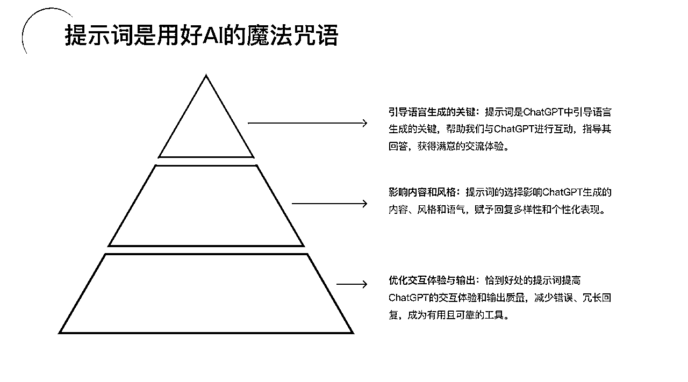
周四晚上加班到 9 点多，比较忙没时间做 PPT ，还要写公众号文章，就简单调整了一点内容，基本没有太大的进展。
周五晚上，大概花了 3 小时 来把 PPT 的图片添加进去，敲定每一页的排版，导出后手动修改在 Mindshow 中无法修改的细节点。并且留了大概 2 小时，自己整体把讲一下，在脑海中把课程的过程演练一遍。
一些 PPT 比如介绍 AI 的行业应用，可以直接用这个 PDF报告 的图片截图，非常好用！
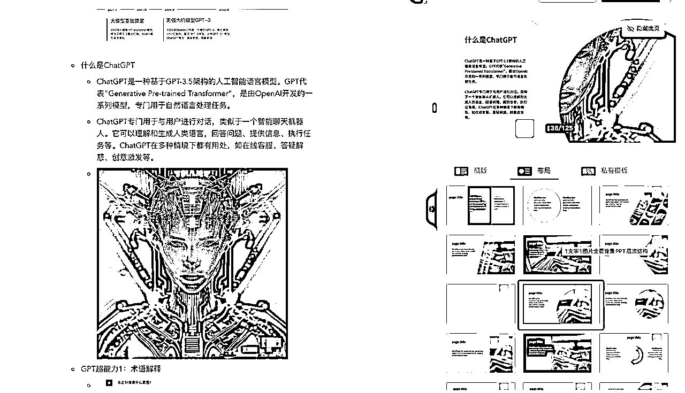
整体加下来，其实一个课程开发的时间，总共时长在 12 个小时左右，自己也算是做到了 10 倍提效了。当然这个课程也是比较基础简单的入门课程，如果是难度更高的课程，可能还是需要更长的时间的。
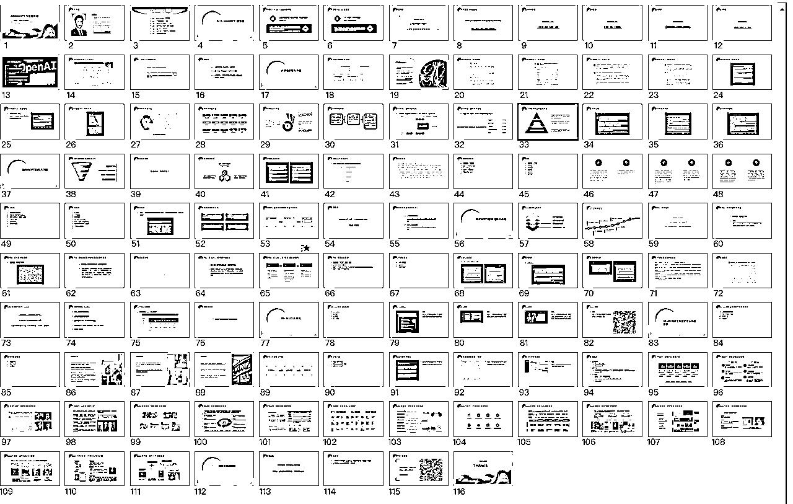
（ PPT 无法直接分享，毕竟是未来吃饭的家伙，请见谅）
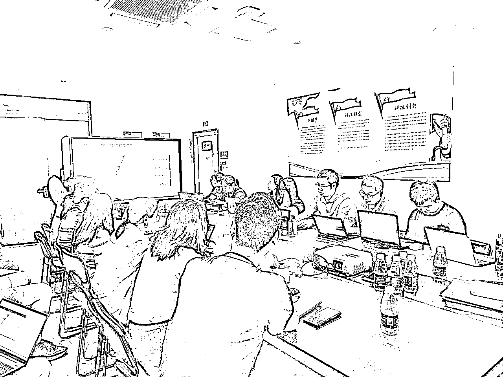
这次的课程效果还不错，收到了学员和老板的认可，最开心的还是在路演环节，我布置了一个路演作业，让他们用 ChatGPT 完成一个工作任务并且分享。有一位学员当场就用 ChatGPT 写了一篇这次培训的企业公众号软文，并且效果还不错，这个是她分享的 PPT 内容（也是用 AI 快速做的），可以看到，原来半天时间，到现在 10 分钟生成，不仅做到了十倍提效，甚至是几十倍的提效！
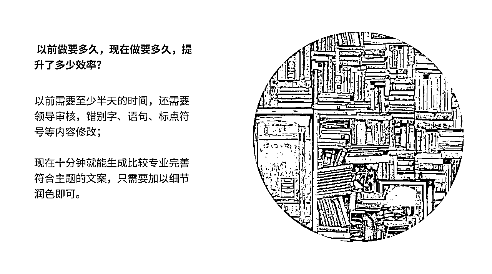
讲课切记陷入知识诅咒，要站在学员的角度去思考问题。昨天，我发现我只上了三分之二的课程。我原本以为的一天课程，实际上根本就讲不完。而且对于小白来说，原本以为比较基础的内容，其实还是需要比较多时间去理解和实操才能消化的。
这次经历让我有了一些深刻的发现。首先，我意识到我已经陷入了知识的诅咒。那些我觉得简单的知识，对于新手来说可能并不那么容易理解。其实这也是和我之前培训经验是一致的，讲师能否站在小白的视角，把一件事情讲的简单和明白，并且是否真正引导学员实操互动起来，是非常重要的，而且也是一个难点。所以我还会再继续改进自己的授课节奏。
如果大家后续也要分享或者培训，建议不要分享太难的东西，先从简单的演示开始，你觉得简单的内容，在小白看来不一定简单。
不同领域的信息差是很大的。在我看来觉得很普通的事情，可能有一些人还没有见过和听过。例如昨天培训中，我做了个课前的调研，发现只有 1/3 的学员使用过大模型产品，而真正把 AI 使用在自己的工作中提效的，只有 2 个人（总共 40 多人）。比如我在两个月前就看过的 AI + office 的视频，在我的潜意识中会觉得，这个视频应该大家都看过了吧，这么爆炸革命性的功能啊，以后 office 门槛太低了，打工人必须知道啊，但确实就是还有人是不知道的，而且还不少。
这让我更加明白，作为一个 AI 转型顾问，其实还是要更多打破次元壁，做 AI 的传播者，深入到更多的行业，更多的领域，用 AI 来赋能，用 AI 把所有的领域都重做一遍！
我从一个数字化转型顾问，工具产品运营经理，正在努力转转变成一个 AI 转型顾问，这个过程中，我深深体验到了专注和持续学习的力量。我发现只要专注于一件事并不断研究，你就会在这个领域取得突破，慢慢成为这个领域的专家。在AI 圈子里我觉得我还是一个初学者，在向各位大佬学习。
但在 AI 的圈外人看来，我已经非常厉害了，而且确实在做课的过程中，我发现很多知识点，我都可以直接拿我写的文章来复用，我很快就把所有的知识点都串起来，这种感觉很奇妙，这就是持续学习的复利。而我也仅仅是从 0 到 1 学习了 55 天，写了 55 篇文章而已，甚至都还不到 2 个月，如果时间再拉长来看，这种复利效应的收益将会越来越大！
学习 AI ，实操很重要，理论与实践相结合才能更好的掌握知识。昨天培训过程也发现，讲完一个知识点，一定要让他们实操，尝试起来，效果才是最好的，尤其是这种工具的学习。
听 10 遍，不如自己做一遍。
反思自己，因为最近做课程准备还有写公众号，好久没有实操写Prompt了，下周要跟着万能的小七姐一起学习实操写提示词了，追上大家的脚步。
我坚持日更公众号 55 天，写的都是 AI 相关的内容，并且每天在朋友圈里打卡。一些 AI 的朋友应该都会记住我的一个标签，就是坚持日更的狠人。这个标签后边的第一印象是什么呢？坚持、靠谱、能力强？ 我也不知道，也欢迎各位大佬和我分享。我觉得日更背后代表的是一种能量，一种势能差。这种能量会吸引到很多人和很多机会。
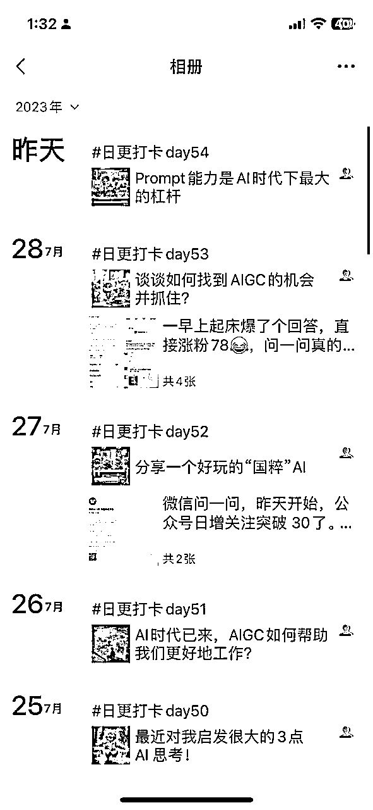
我一直觉得我不是什么大佬，但装着装着，也逼迫自己变成大佬了。也推荐大家多分享，不要觉得自己的内容不够好，只要多分享，总会对一些人有价值的。
这次机会也是我日更公众号，一位圈友主动链接找过来的机会，因为我们刚好都在无锡，所以一拍即合，准备合作搞一些事情。除了这次企业培训，今天也有一位无锡的朋友申请转载我的文章，这篇文章是我之前写的 4000 字的干货长文，刚好发现这位粉丝也是无锡这边做前沿信息的企业协会。所以可能后续也会有一些合作的机会产生。
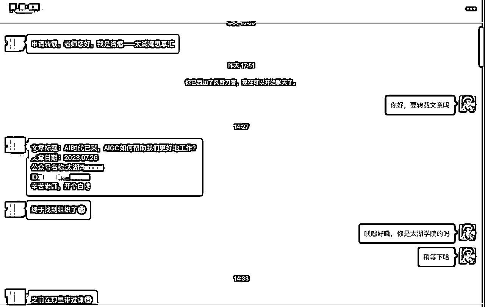
昨天培训完，还有一件很开心的事，有一位朋友从公众号找过来，加我微信，想让我做一个 AI 法律助手，还没给他报价，准备去报价了，这也是一个潜在的定制Prompt的机会。
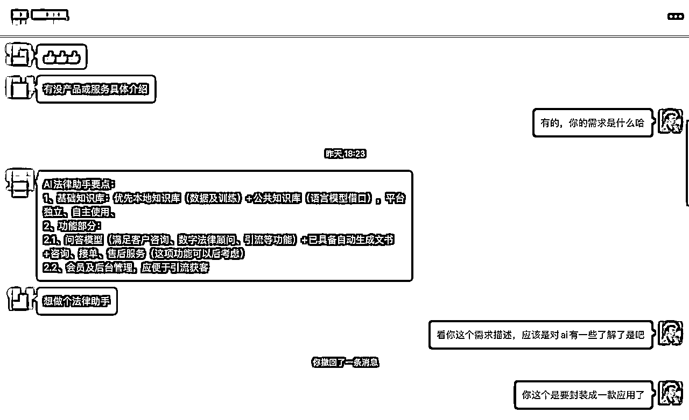
最近有一个比较大的感触，如果大家在非一线城市如北上广深的，一定要注重区域化的机会。因为非一线城市 AI 人才肯定是稀缺的，但又希望得到更多前沿的信息，在这个时候，我们去做完全就是降维打击，可以多链接，多分享，让一些区域化的组织和机构来发现你，或者主动出击。
在无锡都很少能够找到懂 AI 的同行，这个时候其实就是我的机会。接下来我也会联合无锡市这边的一些企业协会，先在无锡这个地方，把自己的 AI 转型顾问的 IP 给做起来，并且下一步我打算打通一些大工校友在江苏这边的圈子，先进行区域化深耕。但全国全网还是要做的，只不过全国的竞争太大了，AI 大佬太多了。
社群里大佬很多，我觉得一直付费社群中人是里边最重要、最值钱的资产。大佬都非常优秀，而且非常乐于分享，如果你真的想在 AI 领域深耕和学习，多多和这些大佬链接。多多请教他们，告诉他们你在做什么事情，你可以提供什么价值，你需要什么帮助。实在不好意思，发个红包🧧感谢一下。这次培训其实我就是请教了好多大佬，也避开了很多坑。
这次的企业培训让我有了很多收获和思考，我也希望通过我的分享，也能给大家带来一些启发。让我们一起在 AI 探索的道路上，不断学习，不断进步。